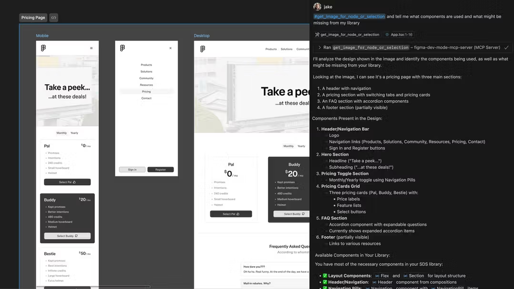
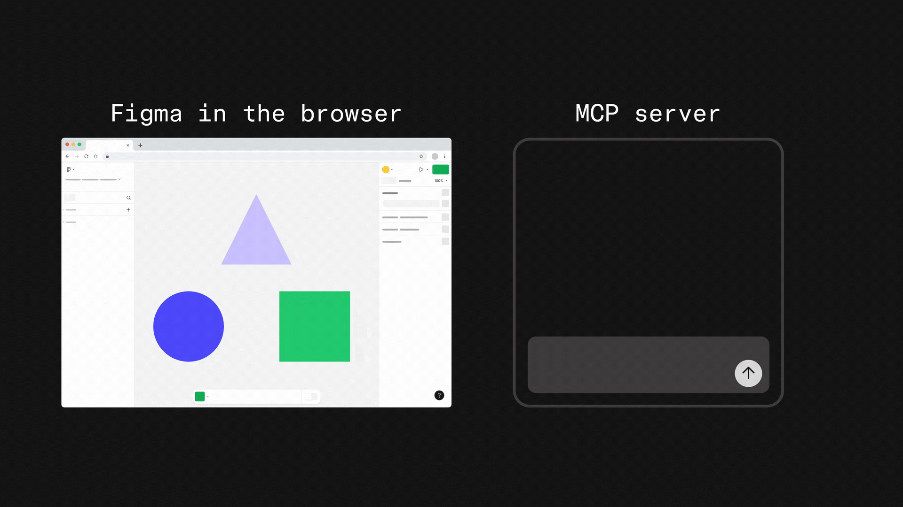
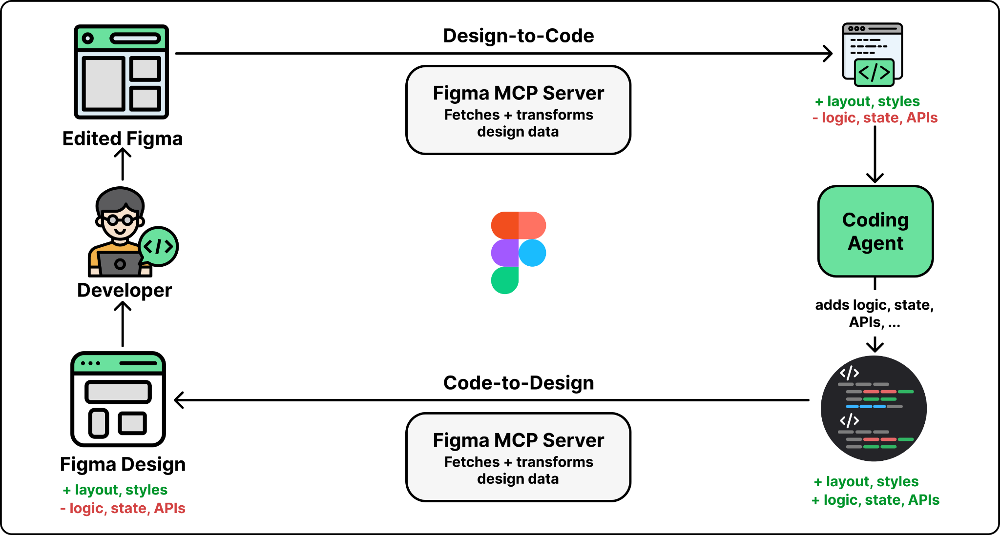
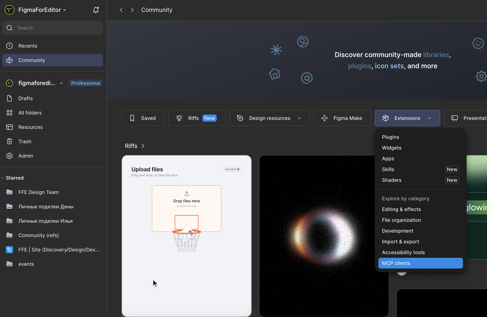
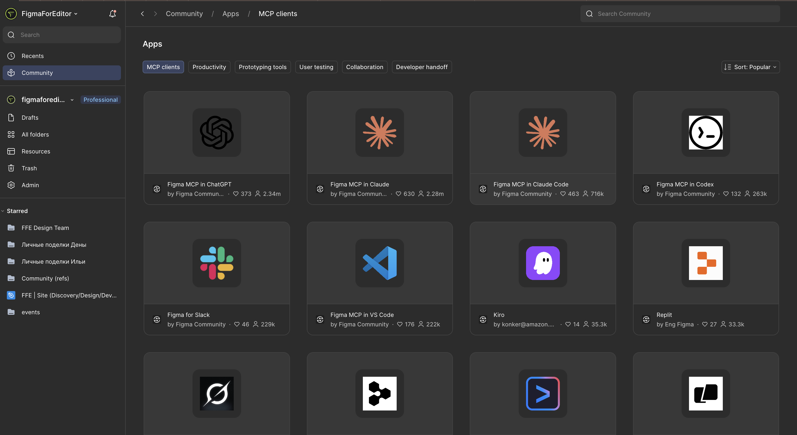
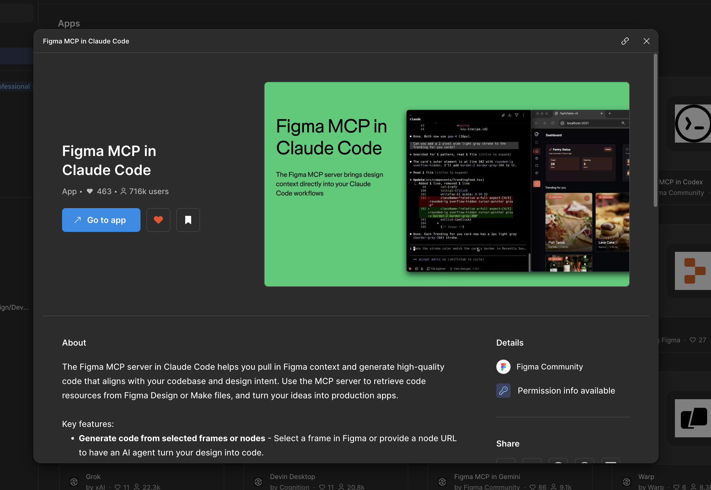
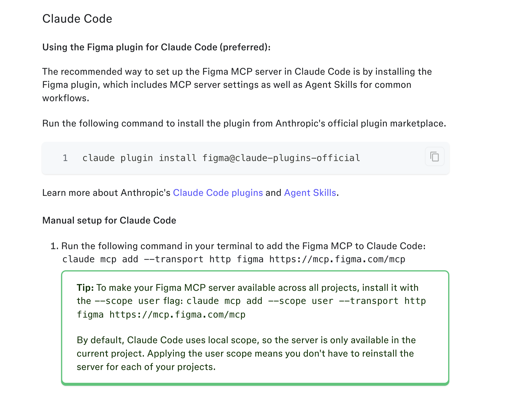

Сегодня мы делаем первый шаг за пределы Фигмы: знакомимся с Claude — AI-ассистентом от компании Anthropic — и с MCP, технологией, которая позволяет Claude напрямую «видеть» и изменять файл Figma, а не просто отвечать на вопросы текстом в чате.
Зачем редактору вообще выходить за пределы Figma

Если открыть Claude просто в браузере и вставить туда скриншот макета, он сможет прокомментировать то, что видит на картинке — но не сможет ничего изменить в самом файле, не будет видеть точные значения отступов, названия слоёв, структуру компонентов. Для UX-редактора ценность AI резко возрастает, когда AI получает прямой доступ к реальной структуре макета — точным значениям, именам, связям между компонентами — а не только к тому, что видно на скриншоте.
Что такое Claude Code простыми словами
Claude Code — это большая языковая модель (AI-ассистент) от компании Anthropic, с которой можно вести диалог текстом: задавать вопросы, просить проанализировать текст, помочь сформулировать документ, объяснить незнакомую тему. Для UX-редактора Claude полезен уже на уровне обычного чата — например, для помощи с формулировками гайдлайна или для объяснения незнакомого термина. Но по-настоящему интересные возможности начинаются, когда Claude получает доступ не только к тексту, который вы вставили в чат, а к реальным файлам и инструментам, которыми вы пользуетесь — и здесь на сцену выходит MCP.
Что такое MCP: мост между AI и вашими инструментами

MCP (Model Context Protocol) — открытый протокол, который определяет единый способ подключения AI-моделей вроде Claude к внешним источникам данных и инструментам: файлам, базам данных, приложениям.
Не нужно разбираться в технических деталях протокола — для редактора достаточно понимать образ: MCP — это мост. С одной стороны моста — Claude, который умеет рассуждать и понимать инструкции на естественном языке. С другой стороны — конкретный инструмент со своими данными: слоями, компонентами, стилями, значениями отступов. MCP-сервер — это конкретная реализация такого моста именно для Фигмы: он «переводит» структуру вашего макета в формат, понятный Claude, и наоборот — переводит инструкции Claude в реальные действия или в чтение данных внутри Фигмы.
Без MCP Claude может только рассуждать о том, что вы ему рассказали текстом. С MCP Claude может напрямую прочитать структуру макета — какие компоненты используются, какие у них свойства, какая на самом деле шкала отступов — и, в зависимости от настроек доступа, предлагать или вносить изменения.
Как MCP-сервер Figma даёт Claude Code доступ к файлу

Figma MCP сервер (официальный от Figma) предоставляет Claude доступ к тем же данным, что видит разработчик в Dev Mode: точные значения отступов, цветов, шрифтов, структуру слоёв и компонентов, экспортируемые ассеты.Это значит, что когда вы просите Claude через MCP «проверить отступы в этом разделе макета на соответствие шкале 4/8», модель не гадает по описанию — она читает реальные значения из файла, точно так же, как читал бы их разработчик через Dev Mode.
В зависимости от настроек и версии сервера, доступ может быть только на чтение (Claude анализирует и предлагает, но не меняет файл сам) или расширенным, с возможностью вносить изменения — это стоит явно проверять при настройке, чтобы не отдать AI больше прав на изменение файла, чем вы готовы контролировать.
Пошаговая настройка: Figma MCP сервер + Claude Code
Общий порядок настройки (конкретные экраны могут немного отличаться в зависимости от актуальной версии на момент прохождения курса — сверяйтесь с официальной документацией):
- Убедитесь, что у вас есть доступ к Figma MCP серверу (обычно требует подключённого файла Figma и, в зависимости от плана, определённого уровня доступа);
- Перейдите на главную, а оттуда в Коммьюнити, там есть выпадайка, в ней лежит раздел с MCP-серверами:

- Выберите Claude Code(или используемую вами другую модель):

- Перейдите по ссылке:

- Добавьте Figma MCP сервер по инструкции из официальной документации — обычно это указание адреса сервера или установка через готовую конфигурацию:

Авторизуйте доступ к нужному файлу Figma, если это требуется отдельным шагом.
Проверьте подключение простым тестовым запросом: «опиши структуру слоёв на первой странице этого файла» — если Claude отвечает точными названиями слоёв из вашего реального файла, а не общими фразами, подключение работает.
Что реально может Claude через MCP, а что нет
Может: читать точную структуру макета, значения токенов и отступов, названия и свойства компонентов; отвечать на вопросы по конкретному файлу, а не абстрактно; при наличии прав на изменение — вносить точечные правки по чёткой инструкции (аналогично Figma Agent из урока 39, но управляемо из внешнего чата, а не изнутри Figma).
Не может: «понимать» визуальный вкус и эстетику так же тонко, как человек; принимать решения о смысле контента без вашей инструкции; заменить финальную редакторскую проверку — как и в случае с Figma Agent, ответственность за итоговое решение остаётся за редактором.
Домашнее задание:
- Настройте Figma MCP сервер и подключите его к Claude по инструкции.
- Попросите Claude проанализировать вашу учебную дизайн-систему на соответствие шкале отступов и токенам (модуль 3, уроки 14, 30) и зафиксируйте, что он нашёл.
- Опишите своими словами (2-3 предложения) принцип MCP так, как объяснили бы его коллеге-редактору, не знакомому с темой.